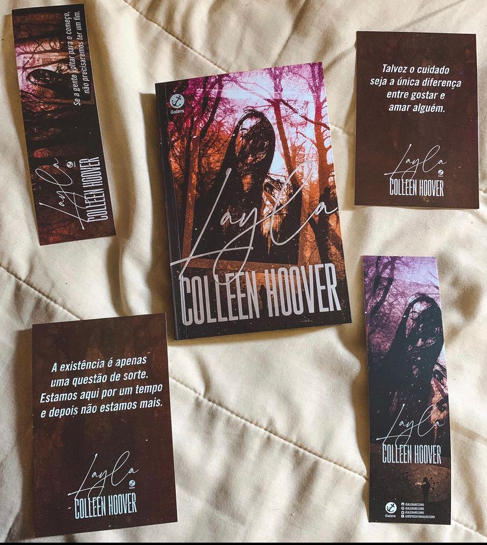

Layla
Após Layla sofrer um acidente que deixou sequelas neurológicas graves, seu namorado resolve levá-la para uma viagem romântica para a pousada onde eles se conheceram. Mas acontecimentos inexplicáveis fazem ambos suspeitarem de uma presença sobrenatural.
Primeiro quero ressaltar que a edição é linda, impecável. A capa é bonita, acompanha marcadores, cards e tudo mais. Já a o livro… A premissa era que teríamos um toque de suspense sobrenatural e tudo que posso dizer é que como terror não assusta, o suspense não te causa apreensão e a parte sobrenatural da narrativa nem chega perto de prender o leitor. Como mistério também não me agradou. É o primeiro livro que leio da autora então não sei se os outros livros dela seguem a mesma linha. O livro me cansou um pouco e achei bem previsível, não parei a leitura pois não sou de desistir mas confesso que pensei quase larguei em. A escrita da autora não é pesada pelo contrário mas, o enredo em si e toda a história é sim chata. Os personagens poderiam ter sido melhor explorados apesar de conhecermos os protagonistas antes do acidente, tudo me pareceu muito superficial e problemático ! Não posso dizer especificamente qual a parte problemática pois seria spoiler.
A narrativa é contada pelo ponto de vista do Leeds e os acontecimentos são bizarros.
O livro conta com poucos personagens, cenários e soa como mais do mesmo ao longo das páginas. Sei também que o livro dividiu opiniões alguns amaram e outros odiaram. Por isso, vale a pena você conferir!
“Meu instinto está me dizendo que esta terrível decisão vai valer a pena quando estiver tudo dito e feito. O que significa que este é o momento do qual provavelmente mais vou me arrepender.”